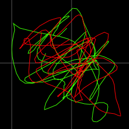

hilbertscope by Richard E Barber

hilbertscope
Hilbert Tranform (x, y) Oscilloscope by Richard E Barber. The hilbertscope app displays an (x, y) diagram of the input sound using the Hilbert transform on x. MIDI buttons to play sounds on channel 1 of your selected device, for analysis through your selected audio input. Demonstrates cosine wave interference patterns.
About the Hilbert Transform
"the Hilbert transform is an allpass filter that provides a 90 degree phase shift at all negative frequencies, and a -90 degree phase shift at all positive frequencies..."Smith III, Julius O. (2022, February 28). Hilbert Transform. Retrieved from https://ccrma.stanford.edu/~jos/sasp/Hilbert_Transform.html. Spectral Audio Signal Processing 2011, W3K Publishing, ISBN 978-0-9745607-3-1. Center for Computer Research in Music and Acoustics (CCRMA), Stanford University